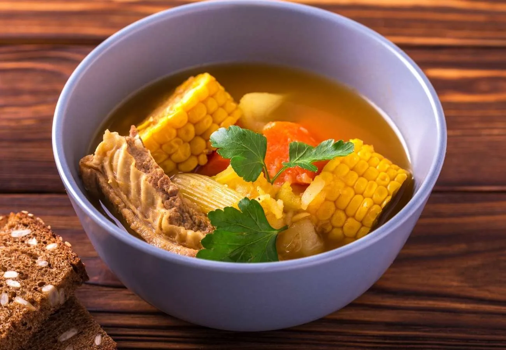

Puchero

Introduction
Puchero is a kind of Spanish-originating stew consisting of a wide range of vegetables,
the exact ingredients of which vary by region.
The dish is also very popular in Yucatán, Mexico, Argentina, Paraguay, Uruguay, the Philippines,
and the independent communities of Andalusia and the Canary Islands.
Puchero is basically similar to the Spanish cocido but lacks colorants (like paprika).
Local ingredients are used in the stew and hence differ from one region to the next.
Ingredients:
- Beef or venison shank - 4 lb
- Salt - to taste
- Oregano – 1 tsp
- Ground cumin - 1 tsp
- Ground coriander - 1 tsp
- Ground black pepper - 1 tsp
- Ground anise - 1/2 tsp (optional)
- Cinnamon - 2-inch piece (optional)
- Saffron (optional) - pinch
- Garlic - 6 cloves
- White (sliced) - 1
- Potatoes (cut into chunks) - 1 1/2 lb
- Winter squash (cut into chunks) - 1 lb
- Chayote (cut into chunks) - 2 (optional)
- Anaheim or poblano chiles (roasted, seeded and cut into chunks) - 4
- Corn (cut into 1- or 2-inch rounds) - 3 ears
- Green beans (cut into bite-sized pieces) - 1/2 pound
- Cooked garbanzo beans (canned or pre-cooked) - 1 pound
- Chopped cilantro - 1/2 cup
- Lime wedges (to serve)
Preparation:
- Begin by taking the meat and salting it well before cutting all the vegetables.
Once those are done, take a large pot and place the meat in it.
- Pour in about 1 gallon of water.
Bring it to a boil and remove the froth that forms on the surface.
Reduce the flame to a simmer and throw in the garlic and all the seasonings.
Allow it to simmer for about 3 hours. Make sure to partially cover the pot while the meat is cooking.
- Keep in mind to check after 2 hours to see if the meat is tender by then.
Take out the meat and chop it into bite-sized pieces. Get rid of the bones, if any.
- If you find marrow in the bones, take it out and add it to the dish. Add the potatoes and onions.
Allow all the ingredients to simmer for about 20 minutes.
- It’s time to add the winter squash and chayote and let the stew simmer for 20 more minutes.
Add the green chiles, corn, garbanzo beans and green beans and cook for an additional 10 minutes.
Finally, add the cilantro and serve the dish with lime wedges. You can also drizzle a little bit of olive oil.